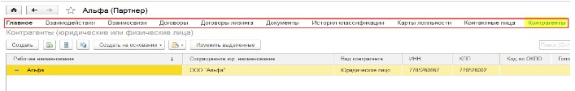
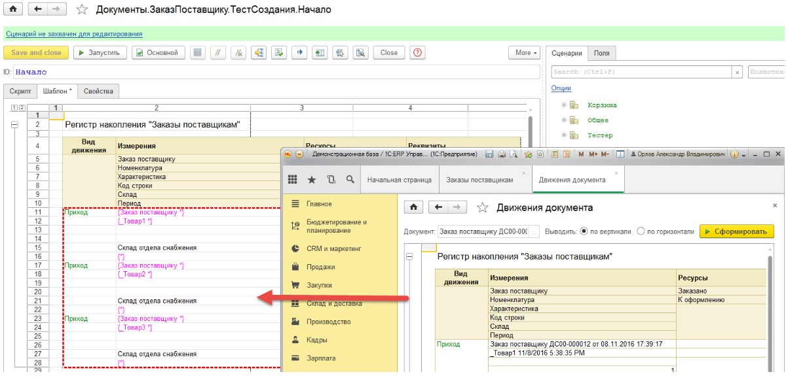
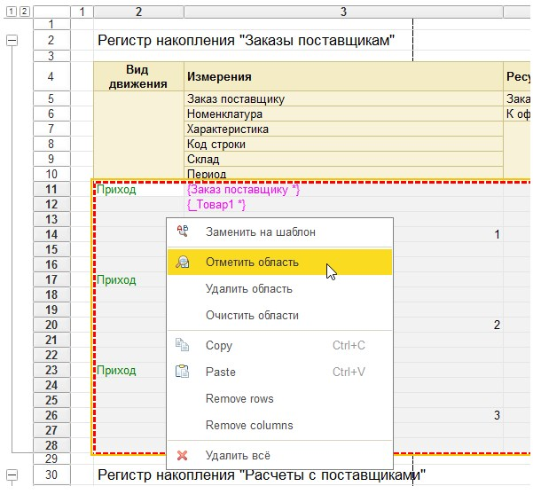
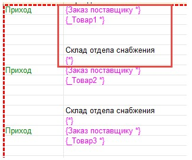
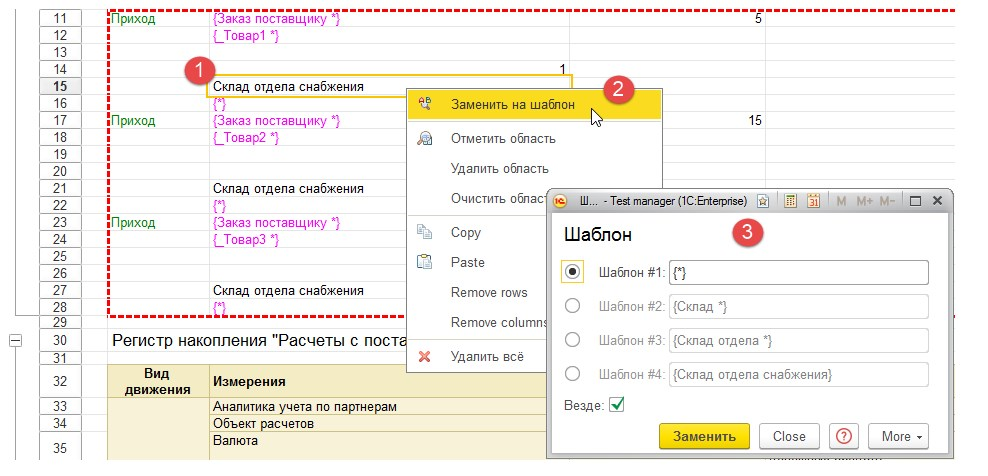
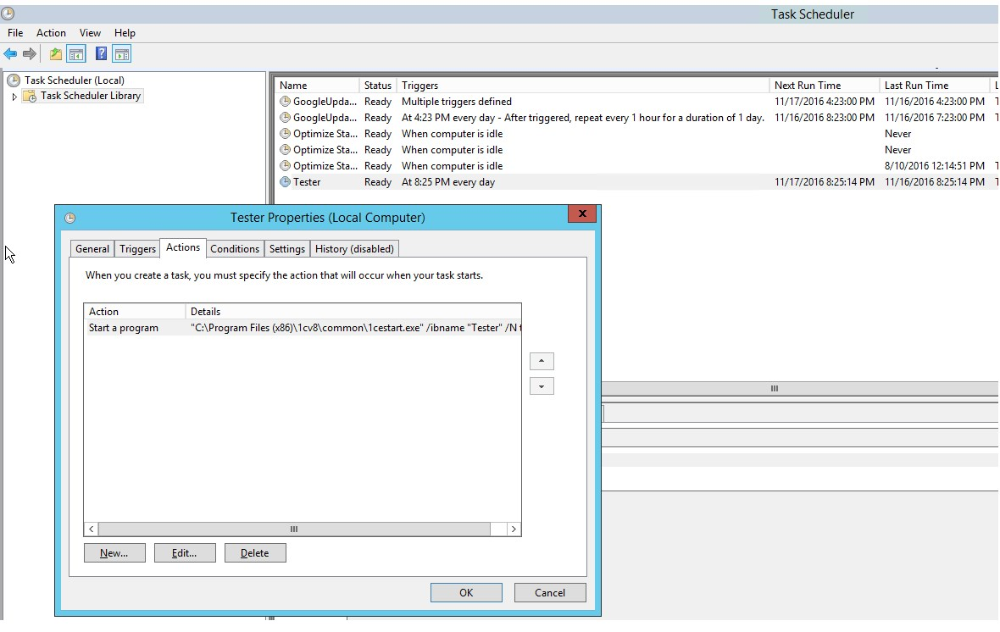

Содержание
|
Последние обновления |
|
|
Депо общих тестов |
|
|
Депо демо тестов для ERP2 (демо) |
|
|
Сайт проекта |
не существует |
|
Разработчик |
Решитко Дмитрий |
|
Вопросы |
https://gitter.im/tester1c/Lobby grumagargler@gmail.com |
|
Лицензия |
BSD (в модуле управляемого приложения) |
|
Стоимость |
бесплатно |
Процесс тестирования приложений при помощи Тестера основывается на взаимодействии Тестера с запущенной конфигурацией 1С в режиме 1С:Предприятие.
При этом считается, что Тестер выступает в роли Менеджера тестирования, а тестируемая конфигурация – в роли Клиент тестирования.
Тестер является системой сценарного тестирования. Это означает, что взаимодействие с тестируемым приложением происходит в режиме эмуляции действий пользователя.
Тестер не умеет вызывать серверные функции/процедуры, выполнять запросы и как-то взаимодействовать с тестируемым приложением на программном уровне.
Тестер не является системой TDD и не способен выполнять unit-тесты программного кода.
Тестер может взаимодействовать с тестируемым приложением только так, как это может делать пользователь, от имени которого производится выполнение сценарных тестов.
Тестер не может протестировать то, что не может протестировать пользователь. Например, если стоит задача проверить правильность движений документа, и при этом в системе нет отчета по движениям документа и нет отчета/обработки/формы, через которую пользователь смог бы проверить записи, Тестер не сможет проверить правильность движений.
Отсюда формулируется важное замечание: разрабатываемые механизмы тестируемого приложения должны быть проверяемыми. Если тестируется работа пользователя с ограниченными правами, у которого нет прав на просмотр соответствующих данных, разработчик теста, должен позаботиться о создании еще одного сценария, который запустит тестируемое приложение под другим пользователем с надлежащими для такого анализа данных правами.
Тестер может тестировать только конфигурации, разработанные на управляемых формах версии 1С:Предприятие 8.3.x.
Тестер является средой, где разрабатываются, хранятся и выполняются тесты.
Тестер может использоваться как облачное приложение с многопользовательским доступом, в котором может быть создано неограниченное число пользователей, тестов и тестируемых приложений.
Развертывание
Для развертывания инфраструктуры тестирования достаточно выполнить следующие шаги (предполагается, что Тестер скачан и прописан в списке информационных баз):
С технической точки зрения, для начала разработки тестов и тестирования больше ничего не требуется.
Первый сценарий
Рассмотрим пример создания теста к конфигурации БСП 2.2.
Напишем элементарный тест, который просто откроет форму списка справочника Партнеры.
В результате, в БСП должна открыться форма списка справочника Демо: Партнеры. Если бы во время открытия справочника, произошла какая-то ошибка, Тестер бы о ней сообщил.
Второй сценарий
Добавим в первый тест создание нового партнера, для этого внесем следующие изменения в сценарий:
// Подключаем БСП к Тестеру
Подключить ();
// Закроем все окна в БСП
ЗакрытьВсё ();
// Открываем в БСП форму списка
Меню ( "Справочники / Демо: Партнеры" );
// Говорим Тестеру, что мы будем сейчас работать с этим окном
Здесь ( "Демо: Партнеры" );
// Нажмем кнопку Создать
Нажать ( "Создать" );
// Говорим Тестеру, что мы будем сейчас работать с этим окном
Здесь ( "Демо: Партнер (создание)" );
// Установим наименование партнера
Установить ( "Наименование", "Мой тестовый партнер" );
// Кликнем на флажок Поставщик
Нажать ( "Поставщик" );
// Нажмем кнопку Записать и закрыть
Нажать ( "Записать и закрыть" );
После выполнения теста, в базе БСП должен быть новый партнер.
После выполнения теста, в окне сообщений Тестера, будет такое предупреждающее сообщение:
14: Поле "Создать" найдено в нескольких местах: ФормаСоздать (Тестируемая кнопка формы / Кнопка командной панели), СписокКонтекстноеМенюСоздать (Тестируемая кнопка формы / Кнопка командной панели) {Тест1[14]}
Сообщение говорит о том, что в 14 строке кода, метод Нажать нашел несколько мест, где можно нажать Создать.
Для того, чтобы задавать однозначно объекты, с которыми требуется взаимодействие, можно использовать идентификаторы, или полный путь.
Например, в 14 строке можно написать так:
// Вариант 1
Нажать ( "!ФормаСоздать" );
// Вариант 2
Нажать ( "!КоманднаяПанель / Создать" );
Для получения идентификаторов и внутреннего содержимого форм тестируемого приложения, см раздел Вкладка Поля.
Следующие разделы посвящены полному обзору функций Тестера.
Всё, что требуется тестировать должно быть описано алгоритмом на языке программирования 1С.
Совокупность программируемой логики определяет понятие Сценарий. Все сценарии разрабатываются и хранятся в Тестере в справочнике Сценарии.
Справочник Сценарии иерархический, для каждого элемента справочника может быть задан свой тип.
Сценарии могут вызывать друг друга, образуя таким образом общую среду выполнения тестов.
Для каждого сценария может быть задана принадлежность к тестируемой конфигурации (приложению).
В таблице собраны реквизиты, которые могут быть заданы для сценария.
|
Поле |
Описание |
|
Приложение |
Тестируемое приложение. Может быть пустым, в этом случае, предполагается что сценарий универсальный и может работать для всех приложений в системе. |
|
ID |
Уникальный идентификатор сценария. Для этого поля назначены горячие клавиши Ctrl+2 |
|
Путь |
Полный путь к сценарию. Это поле формируется автоматически. Путь используется для идентификации сценария в функциях вызова. |
|
Скрипт |
Редактор кода теста. Для поля назначены горячие кнопки Ctrl+1 |
|
Шаблон |
Табличный документ для тестирования отчетов, движений документов, печатных форм и любой другой информации, которую можно вывести в табличный документ |
|
Тип |
Тип сценария. используется для информации и визуального представления дерева сценариев. Сценарии бывают следующих типов:
|
Программный модуль сценария пишется на языке 1С. Контекст исполнения основного кода теста Тонкий клиент.
Кроме этого, в программном коде сценария допускается создание клиент-серверных процедур и функций.
Внимание! Выполнение серверного кода сценария выполняется в небезопасном режиме.
Серверный код сценариев выполняется в контексте конфигурации Тестера, а не тестируемого приложения.
Для взаимодействия с тестируемым приложением, Тестер предлагает в использование небольшое число оберток над объектами тестируемого приложения.
Обертки организованы в виде глобальных функций с короткими именами для простоты написания кода. Также, Тестер экспортирует ряд глобальных переменных, которые могут быть использованы в процессе разработки тестов.
Переменные ниже объявлены как экспортные в модуле управляемого приложения.
|
Name |
Description |
|
Приложение App |
Тестируемое приложение, объект 1С ТестируемоеПриложение. Может использоваться кодом сценария для вызова методов платформы. окно = Приложение.ПолучитьАктивноеОкно (); окно.Закрыть (); При запуске теста, данная переменная не определена. Переменная устанавливается при выполнении метода Подключить (). |
|
ИмяПриложения AppName |
ИД приложения запускаемого теста. Может использоваться кодом сценария для идентификации тестируемой конфигурации. если ( ИмяПриложения = "ERP20" ) тогда Сообщить ( "Тестируется ERP" ); конецесли;
|
|
СвойстваПриложения AppData |
Структура свойств тестируемого приложения. Содержит следующие поля: Scenario // Ссылка на запускаемый сценарий Application // Ссылка на приложение Computer // Имя компьютера, где производится подключение к тестируемому приложению Port // Порт компьютера ClientID // Идентификатор веб-клиента, при тестировании веб-клиента Connected // Булевый признак подключения к тестируемому приложению При запуске теста, данная переменная не определена. Заполняется при выполнении метода Подключить (). |
|
ЗаголовокДиалогов DialogsTitle |
Заголовок диалоговых окон тестируемого приложения. Не используется тестером напрямую, но может быть задействован для разработки тестов, анализирующих заголовки диалоговых окон, таких как вопросы и сообщения, например: вопрос = Приложение.НайтиОбъект ( Тип ( "ТестируемаяФорма" ), ЗаголовокДиалогов ); если ( вопрос <> неопределено ) тогда Нажать ( "Да", вопрос ); конецесли;
|
|
ГлавноеОкно MainWindow |
Главное окно приложения, тип ТестируемоеОкноКлиентскогоПриложения. Может использоваться кодом сценария для вызова методов платформы. ГлавноеОкно.ПерейтиКНачальнойСтранице (); При запуске теста, данная переменная не определена. Заполняется при выполнении метода Подключить (). |
|
ТекущийОбъект CurrentSource |
Внутренняя переменная, задающая текущий визуальный объект тестируемого приложения. Переменная используется методами Тестера, которые получают значения тестируемых полей, например Получить (Get), Взять (Fetch). Каждый метод получения значения, в списке параметров имеет Источник (Source). По умолчанию, этот параметр равен Неопределено, что означает использование переменной ТекущийОбъект в качестве источника. Источником может выступать любой визуальный объект тестируемого приложения, имеющий внутри себя подчиненные визуальный элементы. Примеры: Форма, Группы формы, Таблица. Устанавливать вручную данную переменную не рекомендуется. Используйте метод Здесь (With) для таких целей. |
|
__ (double underscore) |
Глобальная пользовательская переменная, которая доступна всем сценариям. Каждый разработчик сценария может использовать данную переменную по своему усмотрению. |
|
Debug.Delay |
Значение задержки выполнения шагов сценария в миллисекундах. Значение по умолчанию 0 (без задержек). Значение может быть изменено в любой момент выполнения сценария. |
|
Debug.Error |
Булевый флаг, являющийся признаком произошедшей ошибки в выполняемом сценарии. Сам текст ошибки хранится в журнале ошибок, которым является справочник Журнал ошибок (Log). Используя серверные функции, можно получать ошибки выполнения тестов. |
|
Meta |
Метаданные приложения, пример использования: Сообщить ( Мета.Справочники.ВидыНоменклатуры.Synonym ); Метаданные могут быть использованы для унификации получения представления объектов метаданных. Например, требуется открыть форму списка справочника Номенклатура. Для этой цели, можно использовать метод Меню и вызвать его таким образом: Меню ( "НСИ и администрирование / Номенклатура" ); В этом случае, платформа откроет форму списка справочника. Для того, чтобы дальше взаимодействовать с данной формой, её необходимо установить текущей. Для этого используется метод Здесь (With). Этому методу, в качестве параметра, нужно передать строку. Чтобы сделать форму текущей, необходимо передать заголовок формы. В примере ниже показано, как это можно сделать двумя разными способами: Меню ( "НСИ и администрирование / Номенклатура" ); // Первый способ: просто передаем заголовок формы Здесь ( "Номенклатура" ); // Второй способ: используем метаданные Здесь ( Мета.Справочники.Номенклатура.Synonym ); Второй способ более устойчив к изменениям в конфигурации, например, когда синоним справочника Номенклатура, со временем может быть изменен на “Товары” или переведен на другой язык. Так как Тестер не может напрямую общаться с тестируемым приложением на программном уровне, метаданные для Тестера нужно готовить. Для подготовки метаданных используется обработка Meta.epf. Эту обработку можно скачать из формы справочника Приложения. |
|
СтандартнаяОбработка StandardProcessing |
Переменная, определяющая стандартное поведение сценария. Переменная задается на уровне каждого сценария и устанавливается в значение Истина перед каждым запуском сценария. Если СтандартнаяОбработка = Истина тогда Тестер, после окончания выполнения каждого сценария, выполняет следующие действия:
Устанавливать СтандартнаяОбработка в ложь имеет смысл для вспомогательных тестов, не выполняющих интерактивных действий. Таким образом происходит незначительное ускорение хода выполнения сценариев. |
|
ИгнорироватьОшибки IgnoreErrors |
Глобальный флаг, отвечающий за проверку ошибок выполнения сценариев. По умолчанию устанавливается в Истина перед первым запуском сценария. В процессе выполнения кода сценариев, Тестер, неявно, после каждой строки кода проверяет наличие ошибок тестирования. Например, если в коде сценария нажимается кнопка Провести, Тестер проверит, не возникло ли ошибок после данного действия. Нажать ( "Провести" ); // Здесь тестер неявно проверит на ошибки В некоторых сценариях, требуется намеренно провести тестирование на наличие ошибки. Например, сценарий намеренно списывает больше количества товара со склада с тем, чтобы проверить срабатывание контроля остатков и сообщение пользователю. В этом случае, необходимо флаг ИгнорироватьОшибки установить в Истина, провести документ, проверить наличие сообщений об ошибке и вернуть ИгнорироватьОшибки обратно в значение Ложь: // Отключаем проверку ошибок ИгнорироватьОшибки = истина; // Проводим документ с заведомо ошибочной ситуацией Нажать ( "Провести" ); // Ищем сообщения: 1) Диалоговое окно 2) Непосредственно сообщения если ( НайтиСообщения ( "Не удалось провести*" ).Количество () = 0 ) тогда Стоп ( "<Не удалось провести*> диалоговое окно должно быть показано" ); конецесли; Нажать ( "OK", Forms.Get1C () ); // Закрыть стандартное 1С окно если ( НайтиСообщения ( "Недостаточно товара * на складе *" ).Количество () <> 1 ) тогда Стоп ( "<" + _ + "> сообщение об ошибке должно быть показано один раз" ); конецесли; // Возвращаем проверку ошибок ИгнорироватьОшибки = ложь;
|
|
СпециальныеПоля SpecialFields |
Глобальная структура для задания синонимов специальных колонок, которые зависят от языка конфигурации. Вы можете использовать данную структуру для задания своих собственных значений. Данная структура также используется в некоторых внутренних функциях Тестера для автоматической навигации. Например, при активации табличной части, Тестер анализирует, есть ли в таблице активная строка и если нет, пытается активировать первую строку таблицы. Для такой активации, тестер использует структуру СпециальныеПоля для определения названия колонки с номером. В русской конфигурации это будет N, в английской #. |
|
Наименование |
Возвращаемое значение |
Описание |
|
Подключить ( ОчищатьОшибки = истина ) Connect ( ClearErrors = true )
|
|
Производит подключение Тестера к тестируемому приложению. Настройки подключения указываются в справочнике Приложения. Внимание! После подключения к тестируемому приложению, Тестер проверит текущее состояние тестируемого приложения, и если оно находится в ошибочном состоянии, Тестер попытается закрыть все окна в тестируемом приложении. Ошибочное состояние, это когда в окне тестируемого приложения, на момент подключения, находится ошибка проведения документа, сохранения данных и другие ошибки. Если требуется подключиться к приложению без подобного анализа, метод подключения может быть вызван напрямую: Test.ConnectClient ( false );
|
|
Отключить ( Закрыть = ложь ) Disconnect ( Close = false ) |
|
Производит отключение от тестируемого приложения. Если параметр Закрыть = Истина тогда тестируемое приложение будет закрыто. |
|
ЗакрытьВсе(ё) () CloseAll () |
|
Закрывает все окна в тестируемом приложении. Если есть окна с несохраненными данными, Тестер будет пытаться ответить Нет на возникающие вопросы системы. |
|
Закрыть ( Форма = неопределено ) Close ( Form = undefined ) |
|
Закрывает форму. Форма: может быть передан заголовок окна или непосредственно форма, которую требуется закрыть. Если параметр Форма не задан, тогда будет закрыт ТекущийОбъект. Данный метод не анализирует признак модифицированности формы и не пытается ответить на вопрос о сохранении данных. |
|
With ( Name ) |
Тестируемый объект |
Определяет значение глобальной переменной ТекущийОбъект согласно найденного визуального объекта. Имя: Если в параметр передать строку, тогда метод будет искать объекты следующих типов:
В противном случае, метод установит ТекущийОбъект равный переданному параметру. Примеры: Здесь ( "Номенклатура" ); // Тестер будет искать форму с заголовком "Номенклатура" форма = Здесь ( "Заказ покупателя (соз*" ); // Метод также может возвращать значения. Также, могут использоваться автоподстановочные знаки
|
|
Получить ( Имя, Источник = неопределено, Тип = неопределено ) Get ( Name, Source = undefined, Type = undefined ) |
Тестируемый объект |
Возвращает тестируемый объект. Имя: Идентификатор или Заголовок объекта. Имя может задаваться с префиксом “!” или “#”. В этом случае, Тестер будет рассматривать имя как идентификатор искомого поля. В имени может быть задан полный путь к искомому полю. Примеры: Товары / Сумма, или Дополнительно / !Код. Источник: Тестируемый объект, строка с заголовком окна или Неопределено. Если значение не задано, тогда в качестве источника будет использоваться глобальная переменная ТекущийОбъект. Тип: Отбор по типу. Доступны следующие строковые значения:
Если тип не задан, отбор по типу установлен не будет. Примеры: поле = Получить ( "Сумма" ); // Получить поле Сумма. Надпись к полю будет использована при поиске объекта поле = Получить ( "!Сумма" ); // Тоже самое, но при поиске будет использован идентификатор поля. Такой вариант получения полей может быть использован для многоязычных конфигураций поле = Получить ( "Товары / Итого" ); // Вначале будет найден объект Товары, а затем внутри него будет найдено поле Итого. Префиксы "!", "#" могут быть использованы в любой части выражения поле = Получить ( "!ТабличныйДокумент [R1C1]" ); // Вернет ячейку поля табличного документа таблица = Фокус ( "!Товары" ); поле = Получить ( "!ТаблицаКоличество [ 2 ]", таблица ); // Вернет поле Количество во второй строке таблицы Товары
|
|
Взять ( Имя, Источник = неопределено, Type = неопределено ) Fetch ( Name, Source = undefined, Type = undefined ) |
Строка |
Возвращает строковое представление значения объекта. Имя: Идентификатор или Заголовок объекта. Имя может задаваться с префиксом “!” или “#”. В этом случае, Тестер будет рассматривать имя как идентификатор искомого поля. В имени может быть задан полный путь к искомому полю. Примеры: Товары / Сумма, или Дополнительно / !Код. Источник: Тестируемый объект, строка с заголовком окна или Неопределено. Если значение не задано, тогда в качестве источника будет использоваться глобальная переменная ТекущийОбъект. Тип: Отбор по типу. Доступны следующие строковые значения:
Если тип не задан, отбор по типу установлен не будет. Примеры: код = Взять ( "Дополнительно / Код" ); текст = Взять ( "!ТабличныйДокумент [R1C1]" ); // Вернет значение в этой ячейке таблица = Фокус ( "!Товары" ); поле = Взять ( "!ТоварыКоличество [ 2 ]", таблица ); // Вернет значение количества во второй строке таблицы Товары. Внимание! Возвращаемое значение будет отформатировано согласно региональных настроек информационной базы и сеанса
|
|
Установить ( Имя, Значение, Источник = неопределено, Тип = неопределено ) Set ( Name, Value, Source = undefined, Type = undefined ) |
Тестируемый объект |
Активирует и устанавливает значение в поле. Если тип поля Переключатель тогда метод ВыбратьВариант будет использован. В остальных случаях ВвестиТекст (речь идет о методах платформы 1С по работе с тестовым приложением). Имя: Идентификатор или Заголовок объекта. Имя может задаваться с префиксом “!” или “#”. В этом случае, Тестер будет рассматривать имя как идентификатор искомого поля. В имени может быть задан полный путь к искомому полю. Примеры: Товары / Сумма, или Дополнительно / !Код. Источник: Тестируемый объект, строка с заголовком окна или Неопределено. Если значение не задано, тогда в качестве источника будет использоваться глобальная переменная ТекущийОбъект. Тип: Отбор по типу. Доступны следующие строковые значения:
Если тип не задан, отбор по типу установлен не будет. Внимание! При установке значений в полях таблиц, нужно учитывать, в каком режиме находится строка таблицы. Если строка находится не в режиме редактирования, необходимо в параметр Источник передать редактируемую таблицу. В этом случае, Тестер сможет сам перевести строку таблицы в режим редактирования, установить значение в нужную колонку, и закончить режим редактирования. Примеры: // Устанавливает значение в поле Установить ( "#Комментарий", "Важный комментарий" ); // Устанавливает количество в новой строке таблицы Нажать ( "!ТоварыДобавить" ); Установить ( "!ТоварыКоличество", 7 ); // Устанавливает количество во второй строке таблица = Фокус ( "!Товары" ); Установить ( "!ТоварыКоличество [ 2 ]", 15, таблица ); // Устанавливает значение в ячейке табличного документа Установить ( "!ПечатныйДокумент [R1C1]", "Привет мир" );
|
|
Ввести ( Имя, Значение, Источник = неопределено, Тип = неопределено, ПроверитьЗначение = ложь ) Put ( Name, Value, Source = undefined, Type = undefined, TestValue = false ) |
Тестируемый объект |
Метод работает аналогично методу Установить (см. выше) с той разницей, что для ссылочных значений, этот метод будет ждать выпадающего списка предлагаемых платформой значений и выбирать первое значение из этого списка. ПроверитьЗначение: Флаг, который определяет, нужно ли сверять установленное значение с переданным в данный метод значением. Важно учитывать, что данный метод не может полностью проверить правильность выбранного значения. Например, данным методом, вы вводите некоторое значение в ссылочное поле с типом ДокументСсылка. В качестве значения вы передаете номер документа. После того, как метод отработает, в поле будет выбран найденный документ. Однако, если такого документа найдено не будет, в поле всё равно будет выбрано значение, первое из списка. Сверить значение, выведенное в поле с переданным значением в метод, в общем случае, нельзя. Представление выбранного в поле объекта может отличаться от переданного параметра. Однако, если эти значения всё-таки могут быть проверены, можно задействовать параметр ПроверитьЗначение. В этом случае, метод проверит на полное равенство выбранного в поле значения и переданного в метод (параметр Значение). В некоторых случаях, использование данного метода является единственным выходом из-за специфичной работы метода Установить в случае перехода фокуса между полем и таблицей, или полем в строке таблицы. Особенность заключается в том, что в некоторых случаях, платформа пропускает установленное значение методом Установить, что приводит к незапланированному поведению. В таких случаях, можно использовать метод Ввести, который гарантированно заставит платформу выбрать значение в поле. |
|
Очистить ( Имя, Источник = неопределено, Тип = неопределено ) Clear ( Name, Source = undefined, Type = undefined ) |
Тестируемый объект |
Очищает поле. Имя: Идентификатор или Заголовок объекта. Имя может задаваться с префиксом “!” или “#”. В этом случае, Тестер будет рассматривать имя как идентификатор искомого поля. В имени может быть задан полный путь к искомому полю. Примеры: Товары / Сумма, или Дополнительно / !Код. Источник: Тестируемый объект, строка с заголовком окна или Неопределено. Если значение не задано, тогда в качестве источника будет использоваться глобальная переменная ТекущийОбъект. Тип: Отбор по типу. Доступны следующие строковые значения:
Если тип не задан, отбор по типу установлен не будет. |
|
Подобрать ( Имя, Значение, Источник = неопределено, Тип = неопределено ) Pick ( Name, Value, Source = undefined, Type = undefined ) |
|
Производит выбор значения из списка выбора. Имя: Идентификатор или Заголовок объекта. Имя может задаваться с префиксом “!” или “#”. В этом случае, Тестер будет рассматривать имя как идентификатор искомого поля. В имени может быть задан полный путь к искомому полю. Примеры: Товары / Сумма, или Дополнительно / !Код. Источник: Тестируемый объект, строка с заголовком окна или Неопределено. Если значение не задано, тогда в качестве источника будет использоваться глобальная переменная ТекущийОбъект. Тип: Отбор по типу. Доступны следующие строковые значения:
Если тип не задан, отбор по типу установлен не будет. Примеры: таблица = Фокус ( "!Товары" ); Подобрать ( "!ТоварыТип [ 2 ]", "Услуга", таблица );
|
|
Фокус ( Имя, Источник = неопределено, Тип = неопределено ) Activate ( Name, Source = undefined, Type = undefined ) |
Тестируемый объект |
Активирует поле. Имя: Идентификатор или Заголовок объекта. Имя может задаваться с префиксом “!” или “#”. В этом случае, Тестер будет рассматривать имя как идентификатор искомого поля. В имени может быть задан полный путь к искомому полю. Примеры: Товары / Сумма, или Дополнительно / !Код. Источник: Тестируемый объект, строка с заголовком окна или Неопределено. Если значение не задано, тогда в качестве источника будет использоваться глобальная переменная ТекущийОбъект. Тип: Отбор по типу. Доступны следующие строковые значения:
Если тип не задан, отбор по типу установлен не будет. Примеры: Фокус ( "!ТабДок [R1C1]" ); таблица = Фокус ( "!Товары" ); Фокус ( "!ТоварыКоличество [ 2 ]", таблица ); |
|
Нажать ( Имя, Источник = неопределено, Тип ) Click ( Name, Source = undefined, Type = undefined ) |
Тестируемый объект |
Активирует и нажимает на поле. Имя: Идентификатор или Заголовок объекта. Имя может задаваться с префиксом “!” или “#”. В этом случае, Тестер будет рассматривать имя как идентификатор искомого поля. В имени может быть задан полный путь к искомому полю. Примеры: Товары / Сумма, или Дополнительно / !Код. Источник: Тестируемый объект, строка с заголовком окна или Неопределено. Если значение не задано, тогда в качестве источника будет использоваться глобальная переменная ТекущийОбъект. Тип: Отбор по типу. Доступны следующие строковые значения:
Если тип не задан, отбор по типу установлен не будет. Примеры: // Нажать чекбокс если Товар не Услуга нажать = ? ( услуга, "Да", "Нет" ) <> Взять ( "!ЭтоУслуга" ); если ( нажать ) тогда Нажать ( "!ЭтоУслуга" ); конецесли; // Нажать в табличной части таблица = Фокус ( "!Товары" ); Нажать ( "!ТоварыРезервировать [ 2 ]", таблица );
|
|
Вызвать ( Сценарий, Параметры = неопределено, Приложение = неопределено ) Call ( Scenario, Params = undefined, Application = undefined ) |
Любое значение |
Выполняет запуск сценария по переданным пути и параметрам. Сценарий: Полный путь к запускаемому сценарию (каждый сценарий в системе имеет уникальный путь в пределах приложения). Параметры: любое значение, которое будет передано в вызываемый сценарий. Вызванный сценарий может обращаться к переданным параметрам через переменную “_”. В качестве параметра допускается передача строки в формате JSon. В этом случае, строка будет преобразована в структуру и вызываемый сценарий получит в переменную “_” структуру параметров. Приложение: Имя приложения для поиска запускаемого сценария. Если имя не задано, поиск сценария будет производиться в наборе сценариев приложения вызвавшего сценария. Если сценарий не будет найден, поиск будет продолжен в приложении, установленном по умолчанию в настройках окружения текущего пользователя. Если сценарий опять не будет найден, тогда будет произведена попытка поиска сценария в глобальном наборе сценариев, для которых приложение не задано. Если сценарий найден не будет, Тестер сгенерирует исключение. Пример: // Пример 1 Вызвать ( "Общее.ОткрытьСписок", Мета.Справочники.Номенклатура ); // Пример 2 п = новый Структура (); п.Вставить ( "Товар", "Втулка" ); п.Вставить ( "Цена", "150" ); Вызвать ( "МойТест", п ); // В теле МойТест обращение к переданным параметрам идет через _ Сообщить ( _.Товар ); // Втулка // Пример 3. Тоже самое как и в Пример 2, только через строку JSon Вызвать ( "МойТест", "{'Товар': 'Втулка', 'Цена': '150'}" ); // В теле МойТест обращение к переданным параметрам идет через _ Сообщить ( _.Товар ); // Втулка
|
|
Позвать ( Сценарий, Параметры = неопределено, Приложение = неопределено ) Run ( Scenario, Params = undefined, Application = undefined ) |
Любое значение |
Выполняет запуск сценария в текущей папке сценариев. Метод аналогичен методу Вызвать, с той разницей, что поиск сценария будет производиться начиная с папки, где находится вызывающий сценарий. Таким образом, метод Позвать является краткой записью метода Вызвать. Пример: Вызвать ( "Справочник.Номенклатура.Создать.Параметры" ); // Полный путь Позвать ( "Создать.Параметры" ); // Будет работать, если вызывающий тест находится внутри "Справочник.Номенклатура"
|
|
Test.Start ( Scenario, Application = undefined ) * Метод не имеет русскоязычного аналога, потому что является частью программной реализации Тестера |
Булево |
Запускает на выполнение сценарий. В отличие от методов Вызвать и Позвать, этот метод запускает сценарий с полной инициализацией окружения и глобальных переменных. Метод работает также, как если бы пользователь вручную запустил выбранный сценарий в дереве сценариев. Метод можно использовать для запуска тестов по расписанию или запуска группы несвязанных тестов. Scenario: Полный путь к запускаемому сценарию (каждый сценарий в системе имеет уникальный путь в пределах приложения). Application: Имя приложения для поиска запускаемого сценария. Если имя не задано, поиск сценария будет производиться в наборе сценариев приложения вызвавшего сценария. Если сценарий не будет найден, поиск будет продолжен в приложении, установленном по умолчанию в настройках окружения текущего пользователя. Если сценарий опять не будет найден, тогда будет произведена попытка поиска сценария в глобальном наборе сценариев, для которых приложение не задано. Если сценарий найден не будет, Тестер сгенерирует исключение. Пример: если ( Test.Start ( "Инвойс.Создать" ) ) тогда Test.Start ( "Инвойс.Провести" ); конецесли;
|
|
Меню ( Путь ) OpenMenu ( Path ) |
|
Открывает ссылку на объект в глобальном командном интерфейсе. Путь: строка к объекту, разделенная символом “/”. Пример: Меню ( "Продажи / Заказы клиентов" ); // Откроет подсистему Продажи и "нажмет" на Заказы клиентов
|
|
Выбрать ( Имя, Источник = неопределено, Тип = неопределено ) Choose ( Name, Source = undefined, Type = undefined ) |
|
Начинает процесс выбора значения в поле ввода. Имя: Идентификатор или Заголовок объекта. Имя может задаваться с префиксом “!” или “#”. В этом случае, Тестер будет рассматривать имя как идентификатор искомого поля. В имени может быть задан полный путь к искомому полю. Примеры: Товары / Сумма, или Дополнительно / !Код. Источник: Тестируемый объект, строка с заголовком окна или Неопределено. Если значение не задано, тогда в качестве источника будет использоваться глобальная переменная ТекущийОбъект. Тип: Отбор по типу. Доступны следующие строковые значения:
Если тип не задан, отбор по типу установлен не будет. Примеры: Выбрать ( "Покупатель" ); // Равносильно нажатию на кнопку выбора в поле Покупатель таблица = Фокус ( "!Товары" ); Выбрать ( "!ТоварыТовар [ 3 ]", таблица );
|
|
Проверить ( Имя, Значение, Источник = неопределено, Тип = неопределено ) Check ( Name, Value, Source = undefined, Type = undefined ) |
|
Сравнивает значение поля с переданным значением. Если значения не совпадают, будет вызвано исключение. Имя: Идентификатор или Заголовок объекта. Имя может задаваться с префиксом “!” или “#”. В этом случае, Тестер будет рассматривать имя как идентификатор искомого поля. В имени может быть задан полный путь к искомому полю. Примеры: Товары / Сумма, или Дополнительно / !Код. Значение: строка со значением, которое будет сравниваться с значением, хранящимся в проверяемом поле. Источник: Тестируемый объект, строка с заголовком окна или Неопределено. Если значение не задано, тогда в качестве источника будет использоваться глобальная переменная ТекущийОбъект. Тип: Отбор по типу. Доступны следующие строковые значения:
Если тип не задан, отбор по типу установлен не будет. Примеры: Установить ( "Количество", 3 ); Установить ( "Цена", 10 ); Проверить ( "Сумма", "30.00" );
|
|
ПроверитьСтатус ( Имя, Значение, Флаг = истина, Источник = неопределено, Тип = неопределено ) CheckState ( Name, Value, Flag = true, Source = undefined, Type = undefined ) |
|
Проверяет оформление поля. Если оформление не совпадает с ожидаемым, будет вызвано исключение. Имя: Идентификатор или Заголовок объекта. Имя может задаваться с префиксом “!” или “#”. В этом случае, Тестер будет рассматривать имя как идентификатор искомого поля. В имени может быть задан полный путь к искомому полю. Примеры: Товары / Сумма, или Дополнительно / !Код. Кроме этого, в параметр Имя можно передать несколько полей для проверки, разделяя их запятыми. Значение: строка, которая может принимать одно из следующих значений:
Флаг: булево значение, указывается требуемое состояние значения. Например, Видимость ложь или истина. Источник: Тестируемый объект, строка с заголовком окна или Неопределено. Если значение не задано, тогда в качестве источника будет использоваться глобальная переменная ТекущийОбъект. Тип: Отбор по типу. Доступны следующие строковые значения:
Если тип не задан, отбор по типу установлен не будет. Примеры: // Указанные поля должны быть доступны, иначе, будет исключение ПроверитьСтатус ( "Часовой тариф, Время, Сумма проекта", "Доступность" ); // Проверка колонок таблицы таблица = Фокус ( "!Товары" ); ПроверитьСтатус ( "!ТоварыКоличествоУпаковок [2]", "Доступность", , таблица );
|
|
ПроверитьШаблон ( Имя, Источник = неопределено, Тип = неопределено, Шаблон = неопределено ) CheckTemplate ( Name, Source = undefined, Type = undefined, Template = undefined ) |
|
Проверяет табличный документ. Исходный табличный документ, с которым будет проводиться сверка, должен быть заранее сохранен в форме самого сценария, на вкладке Шаблон. Проверка шаблона может быть осуществлена полностью или по выделенным областям. Проверяются только значения полей, оформление игнорируется. При проверке, могут быть использованы знаки автоподстановки, например знак “*”. Подробнее о проверке шаблонов см. в разделе Проверка бизнес логики. Имя: Идентификатор или Заголовок объекта. Имя может задаваться с префиксом “!” или “#”. В этом случае, Тестер будет рассматривать имя как идентификатор искомого поля. В имени может быть задан полный путь к искомому полю. Примеры: Товары / Сумма, или Дополнительно / !Код. Источник: Тестируемый объект, строка с заголовком окна или Неопределено. Если значение не задано, тогда в качестве источника будет использоваться глобальная переменная ТекущийОбъект. Тип: Отбор по типу. Доступны следующие строковые значения:
Если тип не задан, отбор по типу установлен не будет. Шаблон: По умолчанию, в качестве шаблона используется шаблон самого теста (задается на вкладке Шаблон). При необходимости, можно передать шаблон, полученный программно. Пример: ПроверитьШаблон ( "!ОтчетРезультат" );
|
|
ПроверитьОшибки () CheckErrors () |
|
Проверяет наличие сообщений. Если сообщения есть, Тестер выкинет исключение. |
|
Стоп ( Причина = неопределено ) Stop ( Reason = undefined ) |
|
Завершает выполнение сценария. Причина: в данный параметр можно передать текстовое описание возникшей причины для остановки сценария. |
|
Дождаться ( Имя, Таймаут = 3, Тип = неопределено ) Waiting ( Name, Timeout = 3, Type = undefined ) |
Булево |
Приостанавливает выполнение сценария до появления запрошенного объекта, например - окна. Имя: Идентификатор или Заголовок объекта. Имя может задаваться с префиксом “!” или “#”. В этом случае, Тестер будет рассматривать имя как идентификатор искомого поля. В имени может быть задан полный путь к искомому полю. Примеры: Товары / Сумма, или Дополнительно / !Код. Таймаут: время в секундах, в течение которого Тестер будет ждать появления запрошенного объекта. Тип: Отбор по типу. Доступны следующие строковые значения:
Если тип не задан, отбор по типу установлен не будет. Метод возвращает Истина, если в течении отведенного времени объект был найден, Ложь в противном случае. Примеры: если ( не Дождаться ( "Помощник*" ) ) тогда Стоп ( "Окно с помощником должно было появиться" ); конецесли;
|
|
ПолучитьОкно ( Форма = неопределено ) GetWindow ( Form = undefined ) |
Тестируемое Окно Клиентского Приложения |
Возвращает объект типа ТестируемоеОкноКлиентскогоПриложения (TestedClientApplicationWindow) для переданной формы или текущий формы. Форма: объект типа ТестируемаяФорма. Если значение не задано, будет предпринята попытка получения окна для значения ТекущийОбъект. Примеры: форма = Здесь ( "Клиенты" ); окно = ПолучитьОкно (); окно.Закрыть ();
|
|
НайтиФорму ( Имя ) FindForm ( Name ) |
Тестируемая Форма |
Находит и возвращает форму по переданному заголовку. Внимание! В отличие от метода Здесь, данная функция не устанавливает ТекущийОбъект Примеры: форма = НайтиФорму ( "Важная информация" ); Нажать ( "ОК", форма ); // Также, возможна более краткая запись, в этом случае, НайтиФорму будет вызвана неявно: Нажать ( "ОК", "Важная информация" );
|
|
ПолучитьСсылки ( Форма = неопределено ) GetLinks ( Form = undefined ) |
Тестируемый Командный Интерфейс Окна |
Возвращает командный интерфейс формы. Форма: объект типа ТестируемаяФорма. Если значение не задано, будет предпринята попытка получения окна для значения ТекущийОбъект. Примеры: ГлавноеОкно.ВыполнитьКоманду ( "e1cib/data/Справочник.Партнеры" ); форма = Здесь ( "Партнер (соз*" ); Установить ( "!НаименованиеПолноеКомпания", "Тестовый партнер" ); Нажать ( "Поставщик" ); Установить ( "!ГруппаДоступа", "Поставщики" ); Нажать ( "!ФормаЗаписать" ); // ********************************************* // Создание контрагента // ********************************************* Нажать ( "Контрагенты", ПолучитьСсылки () ); // Пример работы метода Здесь ( "Контрагенты*" ); Пример на картинке:  |
|
ПолучитьСообщения () GetMessages () |
Фиксированный массив |
Возвращает фиксированный массив активного окна. Метод может быть использован для анализа сообщений. Нажать ( "!ФормаПровести" ); если ( ПолучитьСообщения ().Количество () = 0 ) тогда Стоп ( "Ожидалось сообщение об ошибке" ); конецесли;
|
|
НайтиСообщения ( Шаблон ) FindMessages ( Template ) |
Массив |
Возвращает массив найденных сообщений. Шаблон: строка с текстом сообщения, которая должна быть найдена. В строке допускается использование регулярных выражений. Использование символов “*” и“?” имеет небольшое отклонение от стандартных правил регулярных выражений. Эти символы будут трансформированы в “[\s\S]+” и “[\s\S]” соответственно. Для дополнительной информации по регулярным выражениям см. http://userguide.icu-project.org/strings/regexp Примеры: если ( НайтиСообщения ( "Не удалось провести*" ).Количество () = 0 ) тогда Стоп ( "<Не удалось провести*> диалоговое окно должно быть показано" ); конецесли; Нажать ( "OK", Forms.Get1C () ); // Закрыть стандартное 1С окно если ( НайтиСообщения ( "Списываемое количество превышает *" ).Количество () <> 1 ) тогда Стоп ( "Сообщение об ошибке должно быть показано один раз" ); конецесли;
|
|
Пауза ( Секунды ) Pause ( Seconds ) |
|
Останавливает процесс выполнения сценария на заданное число секунд. Секунды: целое число секунд. Пауза ( 5 ); // Система будет здесь стоять 5 секунд
|
|
ТекущаяВкладка ( Имя, Источник = неопределено, Тип = неопределено ) CurrentTab ( Name, Source = undefined, Type = undefined ) |
Тестируемая Группа Формы |
Возвращает текущую вкладку панели с вкладками. Имя: Идентификатор или Заголовок объекта. Имя может задаваться с префиксом “!” или “#”. В этом случае, Тестер будет рассматривать имя как идентификатор искомого поля. В имени может быть задан полный путь к искомому полю. Примеры: Товары / Сумма, или Дополнительно / !Код. Источник: Тестируемый объект, строка с заголовком окна или Неопределено. Если значение не задано, тогда в качестве источника будет использоваться глобальная переменная ТекущийОбъект. Тип: Отбор по типу. Доступны следующие строковые значения:
Если тип не задан, отбор по типу установлен не будет. Примеры: // Получаем заголовок текущей вкладки ТекущаяВкладка ( "!ГруппаСтраницы" ).ТекстЗаголовка;
|
|
Далее () Next () |
|
Выполняет переход к следующему согласно расположения элементов, полю. |
|
КСтроке ( Таблица, Колонка, Значение, ИзНачала = истина, Источник = неопределено ) GotoRow ( Table, Column, Value, FromStart = true, Source = undefined ) |
Булево |
Производит переход к строке таблицы. Таблица: Идентификатор или Заголовок таблицы. Имя может задаваться с префиксом “!” или “#”. В этом случае, Тестер будет рассматривать имя как идентификатор искомого поля. Кроме этого, в параметр может быть передан сам тестируемый объект таблицы. В имени может быть задан полный путь к искомому полю. Примеры: Товары / Сумма, или Дополнительно / !Код. Колонка: строка с наименованием колонки, в которой будет производиться поиск значения для перехода. Значение: искомое в переданной колонке значение. ИзНачала: булевое значение, задающее старт поиска. По умолчанию, значение Истина. Это означает, что метод вначале переместится на в начало таблицы, и только потом начнет поиск. Если передать значение Ложь, поиск начнется с текущий строки таблицы. Источник: Тестируемый объект, строка с заголовком окна или Неопределено. Если значение не задано, тогда в качестве источника будет использоваться глобальная переменная ТекущийОбъект. Примеры: Здесь ( "Заказ поставщику *" ); КСтроке ( "!Товары", "N", 3 ); // Перейдет в третью строку табличной части Товары (если есть как минимум три строки)
|
|
Коммандос ( Действие ) Commando ( Action ) |
|
Выполняет навигационную команду системы по переданному строковому параметру. Действие: навигационная ссылка. Примеры: // Открывает стандартную форму списка Коммандос ( "e1cib/list/Справочник.Номенклатура" ); // Открывает стандартную форму нового объекта Коммандос ( "e1cib/data/Справочник.Номенклатура" ); // Открывает общую команду Коммандос ( "e1cib/command/ОбщаяКоманда.ПанельОтчетовЗакупки" );
|
Подход
С точки зрения Тестера, под бизнес логикой понимается влияние, оказываемое действиями пользователя на состав и корректность данных информационной системы.
Например, при вводе документа Заказ поставщику, все движения, сформированные этим документом попадают под понятие бизнес логика.
Проверка бизнес логики в Тестере может быть осуществлена двумя способами:
Оба способа основаны по проверке данных отчетов/печатных форм тестируемого приложения с эталонными данными, хранящимися в самом тесте.
Ниже, будет рассмотрен пример проверки бизнес логики на основании отчета о движениях документа. Проверка логики отчетами, может быть осуществлена похожим образом.
Процессы ниже будут рассмотрены на примере тестирования конфигурации ERP2.
Подготовка эталона
Итак, мы проверяем бизнес логику через отчет о движениях документа.
Для этого нам необходимо иметь в Тестере сохраненный табличный документ с макетом сформированных движений, которые мы считаем правильными.
За получением макета мы должны идти в тестируемое приложение. Там, необходимо сформировать отчет о движениях тестируемого документа, скопировать результат в буфер обмена (Ctrl+A, Ctrl+C), затем, переключиться в Тестер и вставить скопированное в разрабатываемый тест, на вкладку Шаблон.
Результат таких действий показан на картинке ниже (фактически, на картинке показан уже модифицированный вариант шаблона, детали ниже):

Области проверки
Тестер позволяет производить сравнение табличных документов полностью или по выделенным областям.
В целях ускорения прохождения теста, и исключения ложного срабатывания на проверке незначимых, с точки зрения бизнес логики, данных, рекомендуется явно задать проверяемые области макета.
Задание областей осуществляется по правому клику в поле табличного документа, на картинке ниже, красной штрих линией выделена проверяемая область:

Автоподстановки
Кроме задания областей, тестируемые данные могут быть модифицированы для того, чтобы проводить тестирование во времени, в условиях меняющихся значений данных.
Например, движения документа могут содержать такие данные как: дата записи, номер и дата документа. Так как документы могут проводиться в разное время, часть этих данных в тестируемом приложении может постоянно меняться.
Стратегии тестирования могут быть разными, но если имеют место случаи, когда часть данных изменчива, и не требует жесткой проверки на соответствие, разработчик теста может в шаблоне использовать автоподстановочные символы:

Они работают следующим образом:
Внимание! Проверка строк не чувствительна к регистру
Для задания автоподстановок, можно использовать специальный помощник, вызываемый правым кликом на поле таблицы:

В процессе написания сценария, может возникать необходимость в анализе внутренней структуры окон тестируемого приложения.
Такой анализ нужен для выделения идентификаторов полей и точного к ним обращения из кода теста. Также, такой анализ может единственным способом разобраться в составе полей тестируемой формы в случаях, когда поля формируются динамически.
Для такой задачи на форме сценария присутствует вкладка Поля (для новых сценариев, вкладка скрыта, сценарий должен существовать):
По порядку следования маркеров:
Тестер позволяет выгружать и загружать сценарии в файловую систему.
Поддерживается инкрементальная выгрузка/загрузка.
Обработки по выгрузке и загрузке доступны в меню быстрых функций, а также через акселераторы Ctrl+Shift+B (выгрузка), Ctrl+Shift+L (загрузка)
Выгруженные файлы могут быть синхронизированы с системами контроля версий, например Git.
Для конфигурации ERP2, было создано депо https://github.com/grumagargler/ERP2
Функции выгрузки/загрузки могут быть полезны для обмена тестами или создания единых хранилищ тестов для типовых конфигураций.
Запуск тестов по расписанию возможен за счет настройки планировщика запуска программ средствами операционной системы.
Например, в операционной системе Windows, для этого можно воспользоваться программой Планировщик задач.
В общем случае, для запуска требуется выполнить следующую команду:
"C:\Program Files (x86)\1cv8\8.3.8.2088\bin\1CV8C.exe" /IBName"Тестер" /N"Администратор" /C"ЗапуститьERP2тесты" /TESTMANAGER
Где:
|
C:\Program Files (x86)\1cv8\8.3.8.2088\bin\1CV8C.exe |
путь к запускаемой версии платформы |
|
/IBName"Тестер" |
название информационной базы в списке информационных баз |
|
/N"Администратор" |
имя пользователя (используйте /P если нужно задать пароль) |
|
/C"ЗапуститьERP2тесты" |
путь к запускаемому сценарию. Также, есть возможность явного указания приложения, в таком формате: /C"ERP2#ЗапуститьERP2тесты" |
В коде самого теста, может быть произведен запуск тестируемого приложения, например так:
// Запуск клиента тестирования
команда = """C:\Program Files (x86)\1cv8\8.3.8.2088\bin\1CV8C.exe"" /S""localhost\erp2"" /N""Бухлалтер"" /TESTCLIENT";
ЗапуститьПриложение ( команда );
// Ждем 5 секунд, пока запустится
Пауза ( 5 );
// И дальше пошли выполнять тесты
Подключить ();
// и т.д.
Пример:
